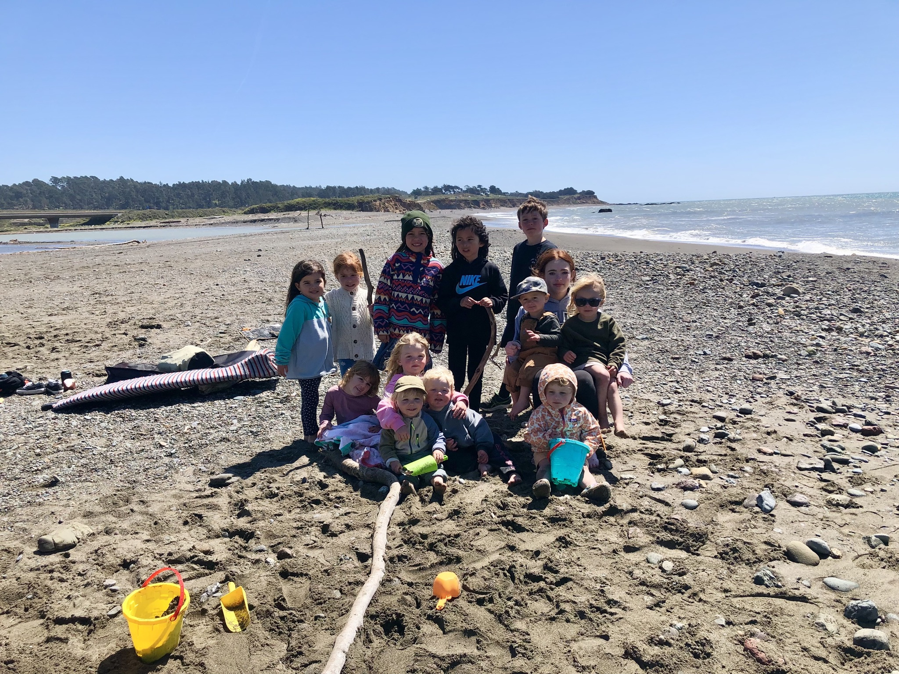
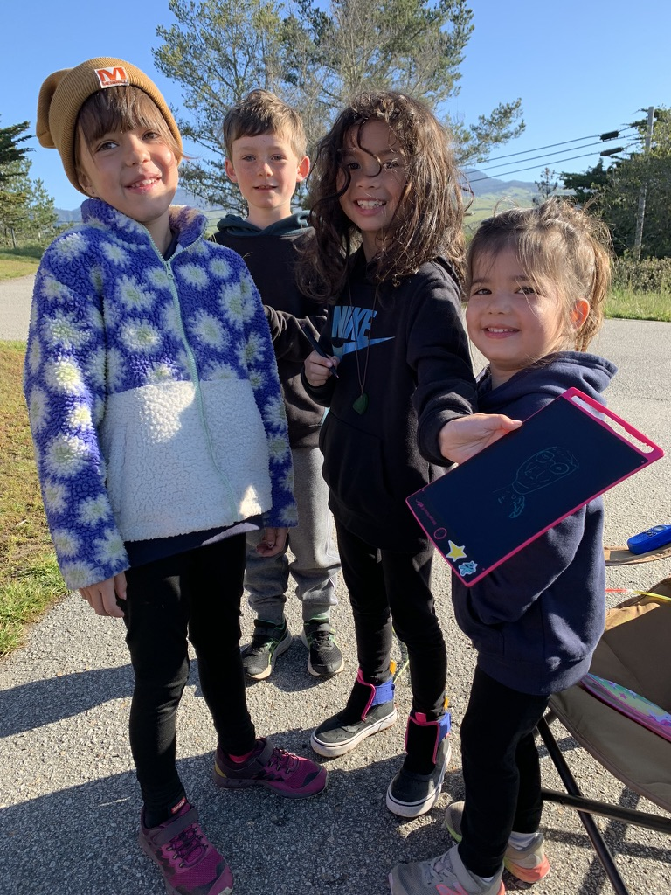
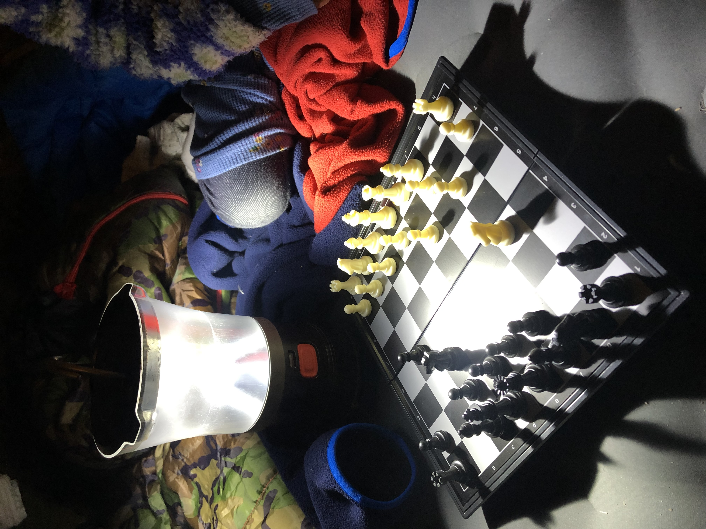

If you're looking for a family-friendly camping destination that's close to the Pacific Ocean, San Simeon Creek Campground is a must-visit spot. This beautiful campground is located just a few miles from the ocean, making it an ideal spot for families who love the great outdoors. This place is especially great if you’re looking to invite other families to join your adventure. The last time my family came here, we had a party of nearly 60 people! We practically took over the entire campground.
San Simeon Creek Campground should be at the top of your list if you're camping with your family, especially if you have young children. Here are six reasons why you should consider booking a trip right now.
Why My Family Loves San Simeon
First and foremost, the campground is surrounded by lush green forests, which provide a picturesque backdrop for your camping experience. The sound of the creek running through the campsite and crashing waves in the distance adds to the peaceful ambiance, making it the perfect spot to unwind and relax with your loved ones.
Secondly, there are plenty of activities to keep the whole family entertained. Whether you want to take a hike through the forest, go fishing in the creek, or enjoy a day at the beach, San Simeon Creek Campground has something for everyone. You can even take a tour of the nearby Hearst Castle, which is a popular attraction in the area. I recommend spending a day at the beach where you can throw a frisbee or fly a kite all day long. Don’t forget to use the driftwood to build the most epic forts you’ve ever seen.
"I never want to leave here." - Parker & Willa Ivey (4-years-old)
The campground is equipped with all the necessary amenities to make your stay comfortable. There are restrooms, showers, and picnic tables available for campers to use. The campground also has a camp store where you can buy firewood, snacks, and other camping essentials.
San Simeon Creek Campground is a great place to disconnect from the stresses of everyday life and reconnect with your family. There's no Wi-Fi or cell phone service in the campground, which means you can spend quality time with your loved ones without any distractions.
Pet-Friendly
The campground is pet-friendly, which means you can bring your furry friends along for the camping adventure. However, you'll need to always keep them on a leash and clean up after them.
"This place is magical." - Violet Ivey (7-years-old)
Lastly, camping at San Simeon Creek Campground in the spring is a magical experience. The weather is mild, and the trees and flowers are in full bloom, creating a beautiful landscape. The peaceful setting of the campground, combined with the beauty of nature, makes it the perfect spot for a family camping trip.
 How to Get There
San Simeon Creek Campground is located in San Simeon, California, which is about 35 miles north of San Luis Obispo. The campground is located off Highway 1, which makes it easy to find. The campground is also close to the beach, so you can spend the day swimming, surfing, or sunbathing.
Beautiful Weather
The weather in San Simeon is mild year-round, which makes it a great place to camp with your family. The average temperature in the summer is around 70 degrees Fahrenheit, while the average temperature in the winter is around 50 degrees Fahrenheit. The weather is perfect for camping, hiking, and other outdoor activities.
SAN SIMEON WEATHERHow to Book a Campsite
San Simeon Creek Campground is a popular destination for families, so it's important to book your campsite in advance. You can make a reservation online or by calling the campground directly. The campground is open year-round, but it's best to visit during the spring or fall when the weather is mild.
To book your family adventure, click the link below to start your reservation.
https://www.parks.ca.gov/?page_id=590Happy camping!